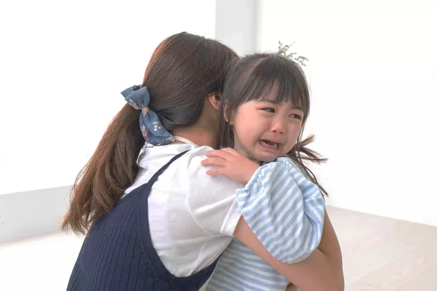

Trebuie neapărat să citești mesajul pe care vreau să ți-l transmit…
Acum poți elimina rapid, ușor și discret toate ridurile. Gandeste-te că în
curând iți vei reda aspectul tanăr al tenului, fără a iesi din baie,
fără a cheltui bani pe produse cosmetice ineficiente, fără a pierde
timpul studiind compozițiile etc.
Totul a început cu un eveniment tragic, în urma căruia...
Este posibil, pentru că, am inventat o formulă revoluționară cofi-dermică
care întinerește pielea timp de 15, 20 sau chiar 25 de ani. Datorită
acesteia, se netezesc toate ridurile, se elimină imperfecțiunile pielii și,
în consecință, fața capătă un aspect frumos, tânăr și sănătos.
Soția mea a scăpat de moarte...
În ziua aceea i-am cumpărat soției mele Michiko niște trandafiri roșii. - Cu
ce ocazie? - râse surprins - Nu pot să-i dau soției mele flori fără motiv? -
i-am raspuns si am sarutat-o pe frunte. Michiko merită toate florile din
această lume. Este o femeie prețioasă. Mereu zâmbitoare, caldă și
înțelegătoare. Cea mai bună mamă a fiicei noastre de 5 ani, Yumi.
Michiko și Yumi în timpul unui joc fără
griji, cu o zi înainte de accidentul care a transformat viața
familiei noastre într-un coșmar
O clipă mai târziu ne-am luat rămas bun pentru că trebuia să merg la o
întâlnire. Mi-am văzut soția plecând bucuroasă pe stradă. Și, deodată, s-a
trezit în fața a 2 bărbați cu glugă.
Totul s-a întâmplat în câteva secunde. Unul dintre bărbați a vrut să-i ia
geanta lui Michiko. Soția mea a încercat să se apere, întrucât bărbații
aveau la ei un cuțit.
Am ajuns acolo cât mai repede, dar ei deja scăpaseră și soția mea stătea
întinsă pe trotuar. Fața ei era complet acoperită de sânge. Oamenii s-au
înghesuit la ea. Petale de trandafiri roșii erau împrăștiate peste tot...
Acest diagnostic a fost ca o propoziție
- Soția ta va trăi, dar din păcate cicatricile îi vor rămâne pe față pentru
totdeauna - a spus categoric doctorul, cand am ajuns la spital. Dacă cuțitul
ar fi ajuns cu un centimetru mai adânc, ea ar putea fi deja moartă.
Bandiții au desfigurat chipul soției mele în plină zi. Și de ce? Să-i
fure o sumă pentru care nici măcar nu se poate cumpăra un pachet de țigări...
- Cui îi pasă de cicatrici! Cel mai important lucru este că Michiko este în
viață și sănătoasă - m-am gândit naiv când am intrat în secție.
Când am intrat în camera soției mele, am găsit-o în lacrimi. Michiko abia a
vorbit. După fiecare cuvânt pe care îl spunea, chipul devenea cuprins de tot
mai multă durere.
- Ai auzit? Voi arăta ca un monstru pentru tot restul vieții mele! a șoptit
ea plângând. Așa că, am îmbrățișat-o strâns, repetând câteva cuvinte de
încurajare pentru a o alina.
Când am părăsit camera soției mele, ceva a trecut prin mine. M-am
prăbușit inconștient pe scaunul din hol și am început să plâng ca un
bebeluș. Erau lacrimi de furie și neputință. Nu a meritat! Și nu puteam face
nimic pentru a o ajuta...
− ,,Ești un monstru! A strigat cu lacrimi în ochi''
Michiko s-a dus acasă complet împachetată. Rănile au durat câteva luni să se
vindece și, după cum a spus medicul, au lăsat cicatrici. A încercat să
mascheze cicatricile cu machiaj și a folosit tot felul de unguente și creme
pe care i le-am dat. Dar, din păcate, erau încă vizibile.
Într-o noapte am fost trezit de țipătul fiicei noastre. Am sărit în sus și am
fugit în camera ei. Am văzut o imagine sfâșietoare. Soția mea a încercat să
ne calmeze fiica care plângea, în timp ce ea se lupta cu toată puterea. -
Lasă-mă monstru-le! – strigă fiica. Mi-am dat seama că fiica noastră
avea un vis urât, dar când mama ei a trezit-o s-a speriat și mai tare. Fața
cu cicatrici a soției mele a condus-o pe fetița noastră la isterie.
De atunci, soția mea s-a retras total în ea însăși. Descurajată, a încetat să
se mai îngrijească de ea, a acoperit toate oglinzile din casă pentru a nu fi
nevoită să-și vadă reflexia. Uneori, când veneam acasă, ea stătea pe canapea
și se uita la perete cu o expresie goală pe față. Am privit cu durere cum
iubita mea soție cădea într-o puternică disperare.

Fiicei noastre îi era frică de cicatricile
de pe fața mamei sale
Cum am descoperit „activatorul tinereții pielii”?
M-am săturat să nu fac nimic. Trebuie să-mi eliberez soția de cicatrici și
astfel să redau pacea familiei mele. Sunt om de știință, specialist
în cercetare genetică. Am participat la invențiile de substanțe care au adus
profituri de milioane pentru marile companii cosmetice japoneze. Am decis
să-mi folosesc toate cunoștințele și anii de experiență pentru a crea o
formulă, care poate restabili pielea frumoasă, sănătoasă și fără cicatrici a
soției mele.
Am început testele imediat. Institutul de Biotehnologie unde lucrez are unul
dintre cele mai moderne laboratoare din lume. Testăm produsele cosmetice ale
celor mai mari branduri mondiale, înainte de a le pune pe piață.
De 6 luni încerc combinații dintre cele mai puternice substanțe naturale.
Scopul meu a fost să creez o formulă care să activeze regenerarea automată a
pielii. Cu alte cuvinte: am vrut ca formula mea să reînnoiască pielea feței
soției mele și să-i redea frumusețea naturală. De asemenea, am vrut să fie
100% sigură pentru sănătate. Pielea lui Michiko era deja într-o stare
deplorabilă și nu am putut să o expun la nicio altă iritare.
Am lucrat mai ales noaptea pentru că ziua trebuia să-mi îndeplinesc sarcinile
profesionale. După șase luni de muncă eram cu adevărat epuizat. Mi-a fost
teamă că nu am destulă forță - că după atâtea nopți nedormite, stres
și efort constant, corpul meu nu va mai putea face față.
Eram amețit din ce în ce mai des, fără suflare, simțeam și dureri ciudate în
piept. Într-o noapte, la 6 luni de la începutul analizelor, am ajuns la
urgență. Mi-au spus că am simptome ale unui atac de cord. Nu i-am spus
niciodată soției mele.
Acea ceașcă de cafea s-a dovedit a fi o adevărată salvare
Simțeam totuși că mă apropii de succes și nu puteam renunța.
Am fost ajutați de un caz norocos. După multe ore de muncă în
laborator, ochii mei s-au închis literalmente de la sine. Deci, la cantină,
mi-am cumpărat o ceașcă de cafea verde, care a fost atât de lăudată de
colegii mei din laborator. Au spus că stimulează mult mai eficientă decât
cea neagră. Să încercăm atunci - m-am gândit în timp ce mă întorceam la
laborator cu o ceașcă de băutură aburindă.
Când am pus băutura pe raft, s-a întâmplat un dezastru. Obosit după ore lungi
de muncă, am turnat din greșeală tot conținutul cănii în formula la care
lucrasem în ultimele luni.
Am blestemat violent! Știam că cafeaua verde este o substanță puternică, care
este adesea adăugată în produsele cosmetice ca activator. Nu știam exact cum
va schimba acțiunea formulei mele. Dar știam că o va schimba radical. Este
ca și cum ai adăuga o lingură de condimente exotice la conservele aproape
gata. Aroma, desigur, s-ar schimba complet. Din nou acesta a fost cazul.
Influența sa nu poate fi anulată.
Am crezut că totul era pierdut. Formula mea era aproape gata, iar acum
accidentul era pe cale să schimbe modul în care funcționează. Și întregul
proces va trebui să fie început din nou. Știam că nu voi avea suficientă
forță pentru încă șase luni de cercetare.
Dar în acel moment s-a întâmplat un miracol! Echipamentul a început să
înnebunească. M-am uitat la microscop. Formula a început în sfârșit să
funcționeze așa cum ar trebui! Cafeaua verde a acționat ca un activator!.
Celulele pielii vizibile la microscop au început să producă colagen automat
și independent. Este o substanță numită „proteina tinereții” care este
responsabilă, printre altele, de aspectul tânăr al pielii.
Celulele vizibile la microscop literalmente „întinereau vizibil”.
Știam deja ce înseamnă asta. Am recalculat cu atenție proporțiile. Datorită
acestui lucru am obținut rezultate la care nici măcar nu visasem. S-a
dovedit că formula nu numai că eliberează pielea de cicatrici, alunițe și
cosuri. Datorită faptului că stimulează producția automată de colagen, de
asemenea, inversează toate semnele îmbătrânirii. Mi-am dat seama că pentru
a-mi ajuta soția să scape de cicatricile desfigurante, inventasem din
greșeală „serul pentru întinerire”.
- „Mi-ai dat o față nouă” – a spus ea cu lacrimi în
ochi
După câteva zile am văzut un zâmbet pe buze, primul după câteva luni. —
Kenzo, uite, cicatricile devin mai mici, spuse ea, încântată. După o
săptămână, cicatricile păreau niște linii albe și fine.
Momentul de cotitură a avut loc în a 14-a zi. Cicatricile au dispărut aproape
complet și toate imperfecțiunile (ridurile fine din jurul ochilor, cicatrici
vechi de acnee, capilare sparte) sunt complet absorbite. După 21 de zile,
nu mai era nici o urmă de cicatrici pe fața soției mele. După 21 de
zile, nu mai era nici o urmă de cicatrici pe fața soției mele.
A început să iasă din casă și a revenit la legătura cu prietenii. De
asemenea, a încetat să se machieze. Nu avea nevoie să-și îmbunătățească
aspectul: pielea ei era impecabilă și nu avea nevoie de perfecționări.
− Mamă, ai o față frumoasă ca de înger – a spus fiica noastră într-o
seară, mângâind-o pe Michiko cu mâna ei. Așa că, soția mea s-a uitat la mine
cu o recunoștință care nu putea fi exprimată prin niciun cuvânt. Am simțit
că mi-am îndeplinit sarcina.

Noi trei suntem din nou fericiți
Dar într-o seară, la o lună după aplicarea formulei, soția mea s-a apropiat
de mine cu o expresie serioasă pe față:
− Am văzut-o pe mama azi. A îmbătrânit teribil în ultimii ani. Și după
accidentul meu a mai îmbătrânit încă 10 ani... Este îngrozitor de deprimată,
„arata ca un măr bătrân și ridat”.
– Știu că ai inventat această formulă doar pentru mine. Dar gândește-te: ai
putea să-mi ajuți mama și alte sute de femei. Kenzo, nu poți ascunde această
formulă de lume. Ar fi un păcat de neglijență!
Michiko avea dreptate: nu aveam dreptul să păstrez pentru mine o astfel de
invenție revoluționară. Am decis să fac tot posibilul pentru a împărtăși
formula mea cu cât mai multe femei posibil. Am trimis descoperirea la
testare pe scară largă.
Cele mai importante 5 laboratoare de cercetare din lume (SUA, Canada, Europa,
China și Japonia) au confirmat eficacitatea maximă a formulei mele. L-am
brevetat cu numele: Formula cofi-dermala .
Crema Elesse elimină 98,9% din riduri și inversează vârsta biologică
a pielii cu 15, 20 sau chiar 25 de ani.
Am vrut ca invenția mea să fie ușor de utilizat, astfel încât să o poată
folosi cât mai multe femei. În fiecare dimineață și seară pentru a observa
ridurile și imperfecțiunile cum dispar zi de zi.
La doar 2 minute după utilizarea formulei de lifting cofidermic , capacitatea naturală a
pielii de a produce colagen este deblocată. Deja după prima utilizare vei
observa că pielea este mai strânsă, în timp ce ridurile vizibile sunt
literalmente „absorbite”.
Femeile care folosesc formula mea cofi-dermală descriu adesea efectele
acesteia cu cuvântul „magie”. Și într-adevăr, la prima vedere poate părea
așa. Se poate intampla să aplici formula și apoi să mergi în bucătărie să
pregătești cina. Când te uiți din nou în oglindă după câteva ore, s-ar putea
să simți că cineva a eliminat literalmente ridurile de pe față.
Multe femei experimentează acest sentiment. Doamnele îmi scriu că în câteva
ore au scăpat de ridurile cu care erau obișnuiți de ani de zile. Ridurile
„fumătorului” în jurul gurii, „ridurile leului” între sprâncene, liniile de
expresie. După aplicarea formulei cofi-dermice toate aceste imperfecțiun
dispar literalmente oră după oră.
Dupa folosirea formulei ,
vei elimina toate ridurile, coșurile, cearcănele, pungile de sub ochi,
precum și petele decolorarea dar și tenul pământos. Fața ta va
deveni perfect netedă, radical tonifiată și strălucitoare precum fața unei
tinere de 20 de ani. Te vei simți întinerită, vei fi mulțumiă de aspectul
tău și te vei privi cu mândrie în oglindă!
După utilizarea formulei cofidermice :

VEI SCĂPA DE RIDURI ADÂNCI

VEI ELIMINA RIDUL PROFUND DE EXPRESIE


VEI NETEZI RADICAL PIELEA

VEI OBȚINE O PIELE LUMINOASĂ

VEI ELIMINA PETELE ȘI DECOLORAREA

VEI SCĂPA DE CEARCĂNELE DE SUB OCHI

Aceste rezultate au fost obținute din grupul de control format din 312.000
de femei din întreaga lume, de toate vârstele, de diferite tenuri și
tipuri de piele. Indiferent dacă ai 29 sau 69 de ani, dacă pielea ta
este uscată și deteriorată sau grasă și predispusă la eczeme, formula mea
cofi-dermică va oferi pielii
netezime, fermitate și strălucire perfectă.
Chiar dacă nu ai mai folosit creme și măști până acum, chiar dacă fumezi și
îți place să mergi la plajă, chiar dacă ai încetat de mult să mai speri
să-ți recape-ți frumusețea tinerească. Să știi că în 21 de zile vei elimina
toate ridurile și vei uimi pe toată lumea cu o piele impecabilă, tânără,
lipsită de orice imperfecțiuni.
De ce este formula mea cofidermală atât de eficientă?
Ca urmare a acțiunii formulei mele cofi-dermice , în piele au loc procese complexe de
regenerare. în piele au loc procese complexe de regenerare.
Te-ai întrebat vreodată de ce fetele tinere nu trebuie să-și facă griji cu
privire la riduri și de ce pielea lor este întotdeauna fermă, netedă și
strălucitoare? Este vorba despre o substanță: colagenul
Colagenul este un „ser pentru tinerețe” pe care corpul dumneavoastră
îl poate produce singur. Din păcate, pe măsură ce îmbătrânești, corpul tău
produce din ce în ce mai puțin. După vârsta de 60 de ani, producția de
colagen dispare complet, iar pielea își pierde netezimea, fermitatea și
strălucirea naturală. Apar ridurile, obrajii lăsați, petele și decolorarea.
Pe piață găsești zeci de produse care conțin colagen, care promit că
vor reda tinerețea pielii. Cu toate acestea, atunci când vă ungeți fața cu o
cremă de colagen sau chiar consumați capsule care conțin acest ingredient,
deficiența acestuia în piele nu este completată.
Este ca și cum ai încerca să-ți hidratezi pielea turnând apă pe față.
Făcând acest lucru, îți va face doar rău pielii. În plus, după acest
tratament pielea ar deveni probabil și mai uscată și iritată. Este similar
cu colagenul conținut de diferite creme, capsule și plasturi.
Adevărul este că nu este posibil să restabiliți tinerețea pielii prin
furnizarea acesteia cu colagen din exterior. Este doar o pierdere de timp și
bani. Pentru a recăpăta pielea tânără, netedă și strălucitoare, este
necesară restabilirea capacității naturale a pielii de a produce
colagen.
Pentru a recăpăta pielea tânără, netedă și strălucitoare, este necesară
restabilirea capacității naturale a pielii de a produce colagen. . Datorită
combinației unice de ingrediente active, îmbogățite cu cantitatea potrivită
de extract de cafea verde, stimulează fiecare celulă a pielii tale să
producă automat colagen. Datorită acestui lucru, pielea își recapătă
capacitatea naturală de a se auto-reface o dată pentru totdeauna și nu mai
trebuie să vă faceți griji cu privire la riduri, pielea lăsată a feței,
gâtului și decolteului, capilare sparte sau pete.
Piele incapabila sa produca colagen, acoperita cu riduri, lipsita de
fermitate si stralucire
Piele perfect netedă, compactă și strălucitoare, care produce de la
sine colagen
EFICACITATE CONFIRMATA
Compoziția revoluționară a formulei mele vă permite și să eliminați
cicatricile (ca și în cazul soției mele), ridurile profunde și
defectele pielii, care anterior nu puteau fi eliminate decât prin chirurgie
plastică. De aceea, formula mea cofi-dermală a fost definită drept „serul japonez al
tinereții” și pentru descoperirea mea am primit Premiul Confucius
(echivalentul asiatic al Premiului Nobel) în domeniul dermatologiei.
Totuși, cea mai prețioasă recompensă pentru mine sunt miile de scrisori pe
care le primesc din toată lumea de la femei care au beneficiat deja de
formula mea cofidermică .
Ei descriu povești extraordinare despre metamorfoza lor și scriu cum
tratamentul le-a schimbat viața în bine. Aș dori să citez (evident cu
acordul autorului) o scrisoare a unei italiene, Elena, care mi-a testat
formula ca unul dintre voluntari. Doamna Elena scrie:
− Acest tratament mi-a schimbat viața! Obișnuiam să arăt ca o
bătrână. Riduri adânci, pungi sub ochi, pete groaznice pe toată
pielea. Nici nu voiam să ies din casă și să fiu văzută. Copiii
arătau spre mine țipând „vrăjitoare bătrână”. Și a durat 21 de
zile de la tratamentul Dr. Sakura și pielea mea este la fel de
netedă ca acum 30 de ani. De odată, domnii de pe stradă au
început să se uite la mine. Soțul meu a devenit și el gelos și mă
seduce din nou ca atunci când eram tineri. Acum știu că dacă nu aș
fi folosit acest tratament, aș fi făcut greșeala vieții mele. În
acest moment, aș dori să-mi exprim recunoștința față de
dumneavoastră, domnule doctor, și vă doresc succes în continuarea
activității dumneavoastră!
Nu-ți asumi niciun risc!
Formula cofi-dermală
ajutat deja mii de femei să scape de ridurile inestetice și să-și
restabilească tinerețea pielii o dată pentru totdeauna. Este o
descoperire globală de eficacitate dovedită, care a primit prestigioasa
garanție a triplei satisfacții: originalitate, calitate și apreciere.
Tripla garanție de satisfacție:
Garanția originalității – poți fi sigur că vei primi produsul
original, disponibil doar prin intermediul acestui site.
Asigurarea calității – datorita metodei avansate de fabricare,
formula cofi-dermica
îndeplinește cele mai înalte standarde de calitate. Toate ingredientele
din formulă au fost testate temeinic, ceea ce a confirmat siguranța lor
100% pentru sănătatea pielii tale.
Garanție de apreciere – numeroase teste de consum și științifice
confirmă eficacitatea maximă a formulei cofidermice .
ATENȚIE la contrafaceri!
La scurt timp după lansarea formulei mele cofidermice , piața a fost literalmente inundată
de diverse produse îmbogățite cu extract de cafea verde. Nu vă lăsați
păcăliți! Folosirea de falsuri nedovedite nu numai că nu te va ajuta
să scapi de petele pielii, ci poate fi și periculoasă pentru
sănătatea ta!
Compoziția formulei mele a fost dezvoltată cu cea mai mare grijă.
Niciunul dintre ingrediente nu a fost acolo din întâmplare. Nu este
suficient să adăugați o cantitate de cafea verde la un amestec aleatoriu
de ingrediente netestate pentru a vă întineri pielea timp de 15, 20 sau
25 de ani. Extractul de cafea verde trebuie să fie foarte concentrat,
iar boabele trebuie să fie de cea mai bună calitate. În plus, nu este
vorba doar de cafea, ci de proporțiile perfecte ale celorlalte
ingrediente din formulă la care am muncit din greu în laborator. Prin
urmare, dacă vrei să fii 100% sigură că vei scăpa de riduri în 21 de
zile – nu apela la falsuri.
Acum și tu poți recăpăta pielea netedă, mătăsoasă, fermă și
strălucitoare
Nu lăsați oamenii să vă spună că aveți nevoie de un raft întreg de creme
diferite pentru a scăpa de riduri. Sau mai rău, trebuie să-ți pui fața
sub un ac chirurgical. Să știi că acum poți elimina 98,9% din toate
ridurile, petele, recâștigând netezimea, fermitatea și
strălucirea perfectă a pielii.
petele, recâștigând netezimea, fermitatea și strălucirea perfectă a
pielii. . Mi s-au oferit
contracte de milioane de dolari, dar nu acesta a fost motivul pentru
care am creat formula. Scopul meu este să eliberez cât mai multe femei
de imperfecțiunile desfigurante ale pielii care le reduc de încredere în
sine și le izolează de cei dragi. Vreau ca fiecare femeie să fie
mândră de aspectul ei – așa cum este soția mea acum.
Am depus toate eforturile pentru a mă asigura că formula mea cofidermică
este disponibilă în
toată lumea cât mai curând posibil. În sfârșit pot să vă anunț că acum
orice femeie il poate folosi, oferind pielii o netezime perfectă.
De aceea vă încurajez să profitați de această ocazie! Pentru a primi
formula cofidermală nu
este nevoie să trimiteți bani online sau să plătiți cu cardul. Doar
completați formularul în 2 minute și în câteva zile veți primi coletul,
pe care îl veți plăti comod curierului sau poștașului.
Mulțumesc că ai citit povestea mea. Sper ca într-o zi să vă amintiți de
această zi și să vă gândiți „a fost ziua care mi-a schimbat viața”.